주택관리사보-1차 (2008-09-07 기출문제)
1과목: 민법
1. 권리의 내용 및 효력에 관한 설명으로 옳은 것은?
- 채권 상호간에는 먼저 성립한 채권이 항상 우선한다.
- 채권과 물권 상호간에는 항상 채권이 우선한다.
- 물권 상호간에는 권리자 평등의 원칙이 적용된다.
- 조건부 법률행위에서 발생하는 권리는 기대권의 성질을 갖는다.
- 소유권과 제한물권 사이에서는 소유권의 성질상 소유권이 우선한다.
(정답률: 48%)

2. 신의성실의 원칙에 관한 설명으로 옳은 것은? (다툼이 있으면 판례에 의함)
- 법원은 당사자의 주장이 있을 경우에만 신의칙의 위반 여부를 판단할 수 있다.
- 분양회사는 아파트단지 인근에 쓰레기매립장이 건설될 예정이라는 사실을 알았더라도 이를 수분양자에게 고지할 신의칙상의 의무를 부담하지 않는다.
- 지방자치단체로부터 매수한 토지가 공공공지에 편입되어 매수인이 주관적으로 의도한 건축이 불가능하게 되었다면 매매계약을 해제할 만한 사정변경에 해당한다.
- 소멸시효 완성 전에 채무자가 채권자에게 시효중단조치가 불필요하다고 믿게 하는 행동을 하였고 채권자도 이를 신뢰하였다면 채무자는 소멸시효의 완성을 주장할 수 없다.
- 근로자가 장기간 무단결근을 이유로 해고된 후 공탁된 퇴직금을 조건 없이 수령하였다고 하더라도 8개월이 지나서 해고무효의 확인을 구하는 것은 신의칙에 반하지 않는다.
(정답률: 48%)
3. 복대리에 관한 설명 중 옳은 것은?
- 복대리인은 대리인의 대리인이다.
- 복대리인 선임행위는 대리행위이다.
- 복대리인과 본인 사이에는 내부관계가 인정되지 않는다.
- 대리인의 대리권이 소멸하더라도 복대리인의 대리권이 소멸하는 것은 아니다.
- 법정대리인이 부득이한 사유로 복대리인을 선임한 경우 그 선임과 감독에 대해 고의ㆍ과실이 없는 때에는 본인에 대하여 책임을 지지 않는다.
(정답률: 63%)
4. 재단법인에 관한 설명으로 옳은 것은? (다툼이 있으면 판례에 의함)
- 재단법인의 설립을 위한 출연의 의사표시도 착오를 이유로 취소할 수 있다.
- 재단법인에게도 상속 및 유증을 받을 권리능력이 있다.
- 재단법인 설립을 위해 출연한 부동산에 대한 이전등기가 이루어지지 않았더라도 법인은 출연자로부터 그 부동산에 대한 소유권이전등기를 받은 제3자에 대하여 소유권을 주장할 수 있다.
- 재단법인이 권리능력을 취득하는 시기는 설립자가 정관을 작성하여 등기소에 제출한 때이다.
- 변경방법을 정한 재단법인의 정관에 좇아 변경된 정관은 주무관청의 허가를 받지 않더라도 효력이 있다.
(정답률: 56%)
5. 부동산 점유취득시효에 관한 설명으로 틀린 것은? (다툼이 있으면 판례에 의함) (문제 오류로 실제 시험에서는 3, 5번이 정답처리 되었습니다. 여기서는 3번을 누르면 정답 처리 됩니다.)
- 甲소유의 대지에 대하여 취득시효가 완성된 경우, 甲은 시효완성한 점유자 乙에 대하여 대지에 대한 불법점유를 이유로 그 인도를 청구할 수 없다.
- 취득시효 완성을 원인으로 乙에게 소유권이전등기의무를 부담하게 된 甲이 그 사실을 알고 당해 부동산을 丙에게 처분하여 乙에 대한 소유권이전등기의무를 이행불능에 빠지게 하고 그로 인해 乙이 손해를 입은 경우, 불법행위가 성립한다.
- ②의 경우 丙이 甲의 처분행위에 적극 가담하였다면 丙과 乙간의 매매계약은 사회질서에 반하는 법률행위로서 무효이다.
- 시효완성한 점유자 乙은 시효완성 후 甲으로부터 그 부동산의 소유권을 취득한 丙에 대하여 취득시효를 이유로 소유권이전등기를 청구할 수 없다.
- 甲의 토지를 乙이 점유하다가 乙이 丙에게 임대하여 丙이 임차인으로서 20년간 경작한 경우, 乙은 소유권을 시효취득하지 못하고 丙이 시효취득을 한다.
(정답률: 48%)
6. 소멸시효에 관한 설명으로 틀린 것은? (다툼이 있으면 판례에 의함)
- 매매대금채무의 이행지체로 인한 지연손해금채권의 소멸시효기간은 10년이다.
- 소유권이전등기 말소등기의무의 이행불능으로 인한 전보배상청구권의 소멸시효는 말소등기의무가 이행불능 상태에 돌아간 때로부터 진행된다.
- 공유관계가 존속하는 한, 그 공유물분할청구권만이 독립하여 소멸시효에 걸리지 않는다.
- 기한을 정하고 있지 않은 채권의 경우, 소멸시효의 기산점은 특별한 규정이 없는 한 채권이 발생한 때이지만, 지체책임은 이행청구를 받은 때로부터 부담한다.
- 소멸시효는 특별한 사정이 없는 한 권리를 행사하는데 사실상의 장애사유가 없는 때로부터 진행한다.
(정답률: 34%)
7. 불공정한 법률행위에 관한 설명으로 틀린 것은? (다툼이 있으면 판례에 의함)
- 부담 없는 증여계약에는 불공정한 법률행위가 성립할 여지가 없다.
- 피해자의 궁박은 경제적인 궁박 상태만을 의미하는 것은 아니다.
- 경매부동산의 매각대금이 그 시가에 비하여 현저히 저렴한 경우, 경매가 적법한 절차에 의해 이루어졌어도 경매는 무효이다.
- 불공정한 법률행위에 의해 급부가 이행된 경우, 피해자는 폭리자에게 급부를 부당이득으로 반환할 의무가 없다.
- 불공정한 법률행위가 성립하기 위해서는 폭리자가 피해자에게 궁박ㆍ경솔 또는 무경험의 사정이 있음을 알고서 이를 이용하려는 의사가 필요하다.
(정답률: 53%)
8. 태아의 권리능력에 관한 설명으로 틀린 것은? (다툼이 있으면 판례에 의함)
- 태아인 상태에서 위법한 약물투여로 인하여 기형으로 출생한 자는 가해자에 대하여 손해배상을 청구할 수 있다.
- 태아인 상태에서 부(父)가 교통사고로 상해를 입고 그 후 출생한 자는 자신의 정신적 고통에 대하여 위자료를 청구할 수 있다.
- 태아는 상속순위뿐만 아니라 유증에 관해서도 이미 출생한 것으로 본다.
- 부(父)는 태아를 인지할 수 있다.
- 교통사고로 인해 유산(流産)된 태아는 가해자에 대하여 불법행위로 인한 손해배상을 청구할 수 있다.
(정답률: 48%)
9. 법인의 불법행위능력에 관한 설명으로 옳은 것은? (다툼이 있으면 판례에 의함)
- 법인의 불법행위능력에 관한 규정은 법인 아닌 사단에 유추적용되지 않는다.
- 법인이 대표자의 선임과 감독에 과실 없음을 증명한 때에는 법인의 불법행위(민법 제35조)가 성립하지 않는다.
- 대표기관이 법인의 목적 범위 외의 행위로 타인에게 손해를 가한 경우, 사원이 단순히 그 사항의 의결에 찬성하였다고 하여 책임을 지는 것은 아니다.
- 법인 아닌 사단의 대표자의 행위가 직무에 해당하지 아니함을 피해자가 중대한 과실로 알지 못한 경우에는 법인 아닌 사단에 대하여 손해배상책임을 물을 수 없다.
- 법인의 불법행위가 성립하는 경우, 피해자는 법인에 대하여 불법행위책임을 물을 수 있을 뿐 가해자인 이사에 대하여 그 책임을 물을 수는 없다.
(정답률: 45%)
10. 표현대리에 관한 설명 중 옳은 것은? (다툼이 있으면 판례에 의함)
- 권한을 넘은 표현대리 규정은 임의대리에만 적용된다.
- 대리행위가 허위표시로서 무효인 경우에는 표현대리가 성립할 수 없다.
- 기본대리권이 권한을 넘은 대리행위와 동종이어야 권한을 넘은 표현대리가 성립한다.
- 대리인이 본인을 위한 것임을 표시하지 않은 경우에도 권한을 넘은 표현대리 규정이 직접 적용된다.
- 대리권이 소멸된 후 선임된 복대리인이 선의ㆍ무과실인 상대방과 대리행위를 한 경우에는 표현대리가 성립할 수 없다.
(정답률: 34%)
11. 착오로 인한 의사표시에 관한 설명 중 틀린 것은? (다툼이 있으면 판례에 의함)
- 착오가 표의자의 경과실로 생긴 때에도 표의자는 착오를 이유로 그 의사표시를 취소할 수 있다.
- 임차인이 목적물을 임대인의 소유인 것으로 착각하여 임차한 경우, 특별한 사정이 없는 한 법률행위의 내용의 중요부분에 착오가 있다고 할 수 없다.
- 시가(時價)에 관한 착오를 이유로 의사표시를 취소할 수 있음이 원칙이다.
- 착오를 이유로 의사표시가 취소된 경우, 이로 인해 상대방에게 손해가 발생한 때에도 불법행위가 성립하지 않는다.
- 토지의 현황ㆍ경계에 관한 착오는 법률행위 내용의 중요부분의 착오에 해당할 수 있다.
(정답률: 38%)
12. 어머니 乙과 언니 丙을 두고 있는 미혼의 甲은 가출한 후 생사불명의 상태가 되었다. 다음 설명 중 옳은 것은? (다툼이 있으면 판례에 의함)
- 丙은 甲의 실종선고를 청구할 수 있는 이해관계인에 해당하지 않는다.
- 乙은 甲이 가출한 날부터 3년이 지나면 甲에 대한 실종선고를 청구할 수 있다.
- 실종선고 후에 甲의 생존사실이 확인되면, 실종선고의 취소가 없더라도 상속은 즉시 그 효력을 상실한다.
- 실종선고가 취소된 경우, 실종선고를 직접 원인으로 재산을 취득한 자는 현존이익에 대해서도 반환의무가 없다.
- 甲이 생환하여 실종선고가 취소되더라도 乙이 실종기간 만료 후 실종선고 전에 선의로 한 甲의 재산에 대한 처분행위는 유효하다.
(정답률: 53%)
13. 법률행위가 유효한 것은? (다툼이 있으면 판례에 의함)
- 특정되어 있지 않고 특정할 수도 없는 물건을 매도한 경우
- 건물이 매도되었는데 계약체결 전에 전부 소실된 경우
- 토지가 포락(浦落)되어 원상복구를 할 수 없는데도 그 사실을 모르고 그것을 매도한 경우
- 매매계약 체결 후에 매매목적물인 토지 전부가 수용되어 소유권이전이 불가능하게 된 경우
- 甲이 자신의 토지를 乙에게 매도한 후 丙의 대리인 丁이 甲의 배임행위에 적극 가담하여 그 토지를 이중으로 매수하였으나 丙이 그 사정을 알지 못한 경우, 甲과 丙사이의 매매계약
(정답률: 25%)
14. 甲의 아들 乙은 소유권이전등기에 필요한 서류를 위조한 다음, 甲의 대리인으로 사칭하여 甲소유 부동산을 丙에게 매도하였다. 다음 설명 중 옳은 것은? (다툼이 있으면 판례에 의함)
- 乙이 甲을 상속한 경우에 乙은 추인거절권을 행사할 수 있다.
- 乙이 미성년자이더라도 乙은 무권대리인으로서 책임을 진다.
- 丙 명의로 이전등기된 경우, 甲의 추인이 없더라도 丙 명의의 등기는 실체관계에 부합하여 유효하다.
- 乙이 대리권을 증명하지 못하고 甲의 추인을 얻지 못한 경우, 丙은 乙에 대해 소유권이전등기 또는 손해배상을 청구할 수 있다.
- 丙이 甲에게 상당한 기간을 정하여 추인 여부의 확답을 최고하였는데, 甲이 그 기간 내에 확답을 발하지 아니한 때에는 추인한 것으로 본다.
(정답률: 40%)
15. 무능력자의 상대방보호에 관한 설명 중 옳은 것은?
- 상대방은 무능력자 측의 추인이 있기 전까지 무능력자의 단독행위에 대하여 무능력자에게 거절권을 행사할 수 있다.
- 무능력자와 계약을 체결한 상대방은 계약체결 당시에 무능력자임을 알았더라도 철회권을 행사할 수 있다.
- 무능력자의 상대방은 무능력자가 능력자로 된 경우에는 추인여부의 확답을 최고할 수 없다.
- 추인을 위해 특별한 절차를 요하는 행위에 관하여 상당한 기간 내에 법정대리인이 확답을 발하지 아니하면 추인한 것으로 본다.
- 금치산자가 사술로써 법정대리인의 동의를 얻은 것으로 믿게 한 때에는 그 행위를 취소할 수 없다.
(정답률: 43%)
16. 미성년자의 행위능력에 관한 설명 중 옳은 것은?
- 미성년자가 대리행위를 함에는 법정대리인의 동의가 있어야 한다.
- 미성년자는 법정대리인의 동의가 없어도 회사의 무한책임사원이 될 수 있다.
- 미성년자는 독자적으로 근로계약을 체결할 수 있지만 임금의 청구는 법정대리인의 동의를 얻어야 한다.
- 법정대리인이 미성년자에게 특정 영업을 허락한 경우 그 영업의 범위 내에서 법정대리인의 동의권이나 대리권은 소멸한다.
- 처분이 허락된 재산으로 매수한 물건의 하자에 대한 하자담보책임을 주장하기 위해서는 미성년자는 법정대리인의 동의를 얻어야 한다.
(정답률: 50%)
17. 법인에 관한 설명으로 틀린 것은? (다툼이 있으면 판례에 의함)
- 정관의 규정에 따른 사원권의 양도나 상속은 유효하다.
- 법인의 대표기관인 이사는 정관 또는 총회의 결의로 금지하지 않은 사항에 한하여 포괄적 복임권을 갖는다.
- 법인의 임의기관인 감사는 재산상황과 관련하여 부정이 있음을 발견한 경우, 그 보고를 위하여 사원총회를 소집할 수 있다.
- 법인의 정관에 대표권 제한에 관한 규정이 있음에도 그 취지가 등기되어 있지 않다면, 법인은 대표자가 그 제한을 넘어서 한 행위에 대하여 악의의 제3자에게도 대항할 수 없다.
- 청산법인에 대한 채권자가 채권신고 기간 내에 채권을 신고하지 않았더라도 법인의 채무가 완제된 후에 귀속권리자에게 인도되지 않은 재산이 있다면 그에 대하여 변제를 청구할 수 있다.
(정답률: 40%)
18. 甲은 그 소유 부동산을 乙에게 증여하면서, 다만 증여세를 회피하기 위해 마치 乙에게 매도한 것처럼 꾸며 이전등기를 해 주었다. 그 후 乙은 그 부동산을 丙에게 매도하고 이전등기를 해 주었다. 다음 설명으로 옳은 것은? (다툼이 있으면 판례에 의함)
- 甲과 乙 사이의 증여는 무효이다.
- 甲과 乙 사이, 乙과 丙 사이의 매매는 모두 무효이다.
- 매매당사자인 甲이 乙과의 매매가 무효라고 주장하는 것은 신의칙에 반한다.
- 甲의 채권자 丁은 乙과 丙 사이의 매매가 무효라고 주장할 수 있다.
- 丙이 악의인 경우에도 甲은 丙 명의의 등기의 말소를 청구할 수 없다.
(정답률: 34%)
19. 물권에 관한 설명으로 틀린 것은?
- 토지의 일부에 대하여 구분소유권이 인정된다.
- 지역권은 요역지와 분리하여 양도할 수 없다.
- 질권과 저당권은 권리 위에도 설정될 수 있다.
- 등기된 수목의 집단(입목)은 토지와는 독립한 물권의 객체가 된다.
- 지상공간의 일부나 지하의 일부만을 대상으로 하는 구분지상권이 인정된다.
(정답률: 36%)
20. 사기에 의한 의사표시에 관한 설명 중 옳은 것은? (다툼이 있으면 판례에 의함)
- 사기와 의사표시 사이에 인과관계가 없어도 사기를 이유로 의사표시를 취소할 수 있다.
- 제3자의 기망행위에 의하여 신원보증서류에 서명날인한다는 착각에 빠진 상태로 연대보증계약서에 서명날인한 경우, 착오를 이유로 의사표시를 취소할 수 없다.
- 의사표시 상대방의 사기에 의하여 법률행위의 중요부분에 착오가 생긴 때에는 착오를 이유로 의사표시를 취소할 수 없다.
- 고지ㆍ설명의무가 있는 경우 소극적으로 진실을 숨기는 것만으로는 기망행위가 될 수 없다.
- 제3자의 사기로 목적물을 헐값에 매도한 경우, 매수인이 제3자의 사기를 알 수 없었던 때에는 매도인은 그 의사표시를 취소할 수 없다.
(정답률: 35%)
21. 소멸시효의 중단과 정지에 관한 설명으로 틀린 것은?(다툼이 있으면 판례에 의함)
- 소송계속 중 청구의 변경도 시효중단의 사유가 된다.
- 현존하지 아니한 장래의 채권을 미리 승인하면 소멸시효의 진행이 중단된다.
- 가압류에 의한 시효중단의 효력은 가압류의 집행보전의 효력이 존속하는 동안은 계속된다.
- 부부일방의 타방에 대한 권리는 혼인관계가 종료한 때로부터 6개월 내에는 소멸시효가 완성되지 않는다.
- 공유자의 한 사람이 공유물의 보존행위로서 그 공유물의 일부 지분에 관하여서만 재판상 청구를 하였으면 다른 공유자에 대해서는 시효중단의 효력이 없다.
(정답률: 32%)
22. 부재자제도에 관한 설명으로 틀린 것은? (다툼이 있으면 판례에 의함)
- 생존이 확실한 자도 부재자가 될 수 있다.
- 법원은 법원이 선임한 재산관리인에 대하여 부재자의 재산으로 보수를 지급할 수 있다.
- 부재자에게 재산관리인이 없는 경우에 법원은 사실상 이해관계인의 청구에 의하여 재산관리에 필요한 처분을 명하여야 한다.
- 재산관리인이 부재자로부터 위임받아 재산처분권을 갖는 경우 그 재산을 처분함에 있어서 법원의 허가를 받을 필요가 없다.
- 재산관리인에 대한 선임결정이 취소되기 전에 재산관리인의 처분행위에 기하여 경료된 등기는 법원의 처분허가 등 모든 절차를 거쳐 적법하게 경료된 것으로 추정된다.
(정답률: 45%)
23. 통정허위표시의 무효는 선의의 제3자에 대항할 수 없다. 여기의 제3자에 해당하지 않는 자는? (다툼이 있으면 판례에 의함)
- 부동산 가장매수인을 상속한 자
- 통정허위표시에 의해 설정된 전세권에 관하여 저당권을 취득한 자
- 부동산의 가장매매의 매수인으로부터 그 부동산을 다시 매수하여 이전등기를 갖춘 자
- 통정허위표시에 의한 저당권부 채권을 담보로 금원을 대여하고 그 저당권부 채권을 가압류한 자
- 가장매매에 의해 매수인 앞으로 이전등기된 부동산에 소유권이전청구권을 보전하기 위해 가등기를 갖춘 자
(정답률: 34%)
24. 토지거래허가구역 내의 토지매매계약이 확정적 무효로 되는 경우를 모두 고른 것은? (다툼이 있으면 판례에 의함)
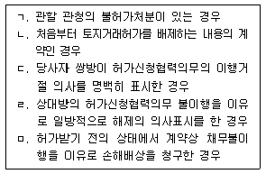
- ㄱ, ㄴ
- ㄷ, ㄹ
- ㄱ, ㄴ, ㄷ
- ㄷ, ㄹ, ㅁ
- ㄱ, ㄴ, ㄹ, ㅁ
(정답률: 48%)
25. 한정치산 및 금치산 제도에 관한 설명으로 틀린 것은?
- 금치산선고의 청구권자는 본인, 배우자, 4촌 이내의 친족, 후견인 또는 검사이다.
- 한정치산선고가 청구되더라도 법원은 금치산선고를 할 수 있다.
- 법원은 한정치산선고의 요건을 갖추고 있더라도 한정치산선고를 하지 않을 수 있다.
- 교육이나 자선 등의 목적으로 재산을 낭비하여 자기나 가족의 생활을 궁박하게 할 염려가 있는 자에 대하여 검사는 한정치산의 선고를 청구할 수 있다.
- 심신상실 상태에 있더라도 금치산선고를 받지 않은 자는 금치산자가 아니다.
(정답률: 39%)
26. 원물과 과실에 관한 설명으로 틀린 것은? (다툼이 있으면 판례에 의함)
- 임금은 법정과실이 아니다.
- 임야에서 채취한 석재(石材)는 천연과실이다.
- 선의의 점유자가 건물을 사용함으로써 얻은 이익은 그 건물의 과실에 준한다.
- 천연과실은 원물로부터 분리되는 때 수취권자에게 귀속되지만, 당사자 사이에 특약이 있으면 그에 따른다.
- 미분리의 과실은 독립한 물건이 아니므로, 명인방법을 갖추더라도 독립한 소유권의 객체가 될 수 없다.
(정답률: 37%)
27. 도급에 관한 설명으로 틀린 것은? (다툼이 있으면 판례에 의함)
- 수급인은 보수(報酬)를 받을 때까지는 도급의 목적물을 유치권의 대상으로 할 수 있다.
- 부동산공사의 수급인은 보수채권을 담보하기 위하여 그 부동산을 목적으로 한 저당권의 설정을 도급인에게 청구할 수 있다.
- 수급인이 자기의 노력과 출재로 건축하여 완성한 건물의 소유권은 특별한 사정이 없는 한 도급인에게 귀속한다.
- 수급인의 완성한 목적물의 인도의무와 도급인의 보수지급의무는 특약이 없는 한 동시이행의 관계에 있다.
- 보수는 금전에 한하지 않으며 노무의 제공이라도 상관없다.
(정답률: 38%)
28. 상대적 무효인 법률행위를 모두 고른 것은?
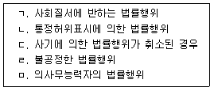
- ㄱ, ㄹ
- ㄴ, ㄷ
- ㄷ, ㅁ
- ㄱ, ㄴ, ㅁ
- ㄴ, ㄷ, ㄹ
(정답률: 28%)
29. 법률행위의 취소에 관한 설명으로 틀린 것은? (다툼이 있으면 판례에 의함)
- 상대방이 취소권자에게 이행을 청구하면 추인한 것으로 본다.
- 취소권자가 취소권을 포기하면 그 법률행위는 유효한 것으로 확정된다.
- 법률행위 취소권의 행사기간에는 시효중단에 관한 규정이 적용되지 않는다.
- 무능력자는 무능력을 이유로 취소할 수 있는 법률행위를 법정대리인의 동의 없이 단독으로 취소할 수 있다.
- 매매계약 체결시 토지의 일정 부분을 매매 대상에서 제외시키는 특약을 한 경우, 그 특약만을 사기에 의한 법률행위로서 취소할 수 없다.
(정답률: 27%)
30. 기한에 관한 설명으로 틀린 것은?
- 기한이 도래한 법률행위에는 소급효가 인정된다.
- 어음ㆍ수표행위에는 조건을 붙일 수 없지만, 시기는 붙일 수 있다.
- 기한의 이익은 포기할 수 있으나 상대방의 이익을 해하지 못한다.
- 기한부 권리를 일반규정에 의하여 처분ㆍ상속ㆍ보존 또는 담보로 할 수 있다.
- 채무자가 담보제공의 의무를 이행하지 않은 때에도 채권자는 본래의 이행기에 이행을 청구할 수 있다.
(정답률: 42%)
31. 권리의 원시취득에 해당하지 않는 것은? (다툼이 있으면 판례에 의함)
- 저당권 설정
- 시효취득
- 무주물 선점
- 가공에 의한 소유권 취득
- 신축에 의한 건물의 소유권 취득
(정답률: 43%)
32. 사망과 관련된 설명 중 틀린 것은? (다툼이 있으면 판례에 의함)
- 실종선고를 받은 사람의 공법상의 권리는 소멸하지 않는다.
- 2인 이상이 동일한 위난으로 사망한 경우에는 동시에 사망한 것으로 추정한다.
- 자연인은 사망신고로 권리능력을 상실하는 것은 아니다.
- 동시사망추정에 대한 반증이 없어 동시에 사망한 것으로 인정된 자 사이에도 상속이 이루어진다.
- 탑승한 항공기가 2004년 2월 15일에 추락하여 생사불명이 된 자가 2008년 3월 5일에 실종선고를 받았다면, 20⑤년 2월 15일 24시에 사망한 것으로 본다.
(정답률: 39%)
33. 3년의 단기소멸시효에 걸리는 채권을 모두 고른 것은?
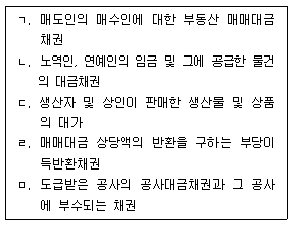
- ㄱ, ㄷ
- ㄴ, ㄹ
- ㄷ, ㅁ
- ㄱ, ㄹ, ㅁ
- ㄴ, ㄷ, ㅁ
(정답률: 28%)
34. 조건부 법률행위에 관한 설명으로 옳은 것은?
- 법률행위 당시에 정지조건이 이미 성취된 것이면 그 법률행위는 무효이다.
- 법률행위의 조건이 선량한 풍속 기타 사회질서에 위반한 것인 때에도 그 법률행위는 유효하다.
- 조건을 붙일 수 없는 법률행위에 조건을 붙인 경우에 그 법률행위는 원칙적으로 전부무효가 된다.
- 건축허가를 받지 못할 때에는 토지매매계약을 무효로 하기로 한 약정은 정지조건부 법률행위에 해당한다.
- 조건이 법률행위의 당시에 이미 성취할 수 없는 것인 경우에 그 조건이 해제조건이면 그 법률행위는 무효이다.
(정답률: 50%)
35. 반사회적 법률행위에 관한 설명으로 틀린 것은? (다툼이 있으면 판례에 의함)
- 첩(妾) 계약은 본처의 사전승인이 있더라도 무효이다.
- 법률행위가 사회질서에 반하여 무효가 된 경우에도 이를 추인하면 새로운 법률행위로 본다.
- 이미 매도된 부동산에 관하여 매도인의 채권자가 매도인의 배임행위에 적극 가담하여 체결한 저당권설정계약은 무효이다.
- 법률행위의 성립 과정에서 강박이라는 불법적 방법이 사용된 데에 불과한 경우, 그 법률행위는 반사회적 법률행위로서 무효가 될 수 없다.
- 법률행위의 내용 자체는 반사회적인 것이 아니더라도 표시되거나 상대방에게 알려진 법률행위의 동기가 반사회적인 경우에는 그 법률행위는 무효가 된다.
(정답률: 50%)
36. 임의대리와 법정대리에 공통된 대리권의 소멸원인이 아닌 것은?
- 본인의 사망
- 대리인의 사망
- 대리인의 금치산
- 본인의 금치산
- 대리인의 파산
(정답률: 36%)
37. 계약의 해제에 관한 설명으로 틀린 것은? (다툼이 있으면 판례에 의함)
- 해제권은 당사자간의 계약이나 법률규정에 의하여 발생한다.
- 계약이 합의해제된 경우에 특별한 사정이 없는 한 채무불이행으로 인한 손해배상을 청구할 수 없다.
- 해제의 효과로서 원상회복의무가 발생하지만, 해제의 의사표시 전에 해제된 계약으로부터 생긴 법률관계를 기초로 하여 새로운 물권을 취득한 제3자의 권리를 해하지 못한다.
- 제3자가 매수인으로부터 매매목적물에 관하여 소유권이전등기를 경료받은 후에 매도인이 계약을 해제하더라도 매도인은 소유권에 기하여 매수인명의의 소유권이전등기말소를 청구할 수 없다.
- 매수인의 귀책사유에 의하여 매도인의 매매목적물에 관한 소유권이전의무가 이행불능이 되었더라도 매수인은 이행불능을 이유로 계약을 해제할 수 있다.
(정답률: 34%)
38. 무효인 법률행위와 취소할 수 있는 법률행위의 추인에 관한 설명으로 옳은 것은? (다툼이 있으면 판례에 의함)
- 취소할 수 있는 법률행위를 추인한 후에도 다시 취소할 수 있다.
- 취소권자가 취소할 수 있음을 모르고 한 추인의 의사표시는 효력이 없다.
- 무권대리행위의 추인의 의사표시는 대리행위의 상대방에 대하여만 할 수 있다.
- 미성년자는 능력자가 되기 전에 법정대리인의 동의를 얻어 추인하더라도 추인의 효력이 없다.
- 매매계약의 당사자가 무효인 줄 알고 계약을 추인한 때에는 계약은 특별한 사정이 없는 한 체결시에 소급하여 효력이 있다.
(정답률: 28%)
39. 甲과 乙은 X토지를 매매목적물로 하기로 약정하였으나 X토지의 지번에 관하여 착오를 일으켜서 계약서상 목적물로 Y토지의 지번을 표시하고 Y토지에 대해서 乙명의로 소유권이전등기가 경료되었다. 다음 설명 중 옳은 것은? (다툼이 있으면 판례에 의함)
- 甲과 乙간에는 Y토지에 대하여 매매계약이 존재한다.
- 乙은 甲에 대하여 X토지에 대한 소유권이전등기를 청구할 수 있다.
- 甲은 착오를 이유로 X토지에 대한 매매계약을 취소할 수 있다.
- 甲은 乙에 대하여 Y토지에 대한 소유권이전등기의 말소를 청구할 수 없다.
- 만일 丙이 선의로 乙로부터 Y토지에 대하여 소유권이전등기를 경료받았다면 丙은 Y토지의 소유권을 취득한다.
(정답률: 37%)
40. 물건에 관한 설명으로 옳은 것을 모두 고른 것은? (다툼이 있으면 판례에 의함)
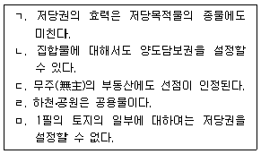
- ㄱ, ㄷ
- ㄷ, ㄹ
- ㄹ, ㅁ
- ㄱ, ㄴ, ㅁ
- ㄴ, ㄹ, ㅁ
(정답률: 34%)
2과목: 회계원리
41. 다음 설명 중 옳지 않은 것은?
- 재무보고의 주된 목적은 투자 및 신용의사결정에 유용한 정보의 제공에 있다.
- 유용한 정보가 갖추어야 할 가장 중요한 질적 특성에는 목적적합성과 신뢰성이 있다.
- 분기별 재무제표는 연간 재무제표에 비해 재무보고의 적시성을 높이게 된다.
- 재무제표를 작성하고 표시할 책임은 기업실체의 경영자에게 있다.
- 대차대조표, 손익계산서, 현금흐름표는 발생기준에 따라 작성된다.
(정답률: 36%)
42. 다음 중 사채의 회계처리에 대한 설명으로 옳지 않은 것은?
- 사채할인발행차금은 사채의 차감계정이다.
- 사채할증발행차금을 유효이자율법으로 환입하는 경우 사채이자비용은 매년 증가한다.
- 사채할인발행차금을 유효이자율법으로 상각하는 경우 사채이자비용은 매년 증가한다.
- 사채발행차금을 유효이자율법으로 상각(환입)하는 경우 기초 장부가액에 대한 이자비용의 비율은 매년 동일하다.
- 사채할증발행차금을 유효이자율법으로 환입하는 경우 그 환입액은 매년 증가한다.
(정답률: 30%)
43. 다음 중 회계변경과 오류수정에 대한 기업회계기준서의 내용으로 옳지 않은 것은?
- 회계추정의 변경은 전진법으로 처리하고, 회계정책의 변경은 소급법으로 처리함을 원칙으로 한다.
- 현금주의로 회계처리한 것을 발생주의로 변경한 것은 회계정책의 변경이다.
- 회계정책의 변경효과와 회계추정의 변경효과로 구분하기 불가능한 경우에는 회계추정의 변경으로 본다.
- 감가상각 대상자산의 내용연수 변경은 회계추정의 변경이다.
- 기업회계기준의 개정으로 인해 회계변경을 한 기업은 변경의 정당성을 입증하지 않아도 된다.
(정답률: 28%)
44. (주)서울(회계기간 1.1～12.31)은 2007년에 발생한 사건으로 인하여 손해배상소송에 피소되었으며, 기말 현재 확정판결은 나지 않은 상태이다. (주)서울은 이 소송에서 패소가능성이 매우 높고, 배상금은 10억원이 될 것으로 신뢰성 있게 추정된다. (주)서울은 2007년 재무제표에 이를 어떻게 보고해야 하는가? (단, 주석공시는 고려하지 않음)
- 손실 10억원을 손익계산서에, 부채 10억원을 대차대조표에 보고한다.
- 확정판결이 나지 않았기 때문에 아무런 회계처리도 하지 않는다.
- 자본조정으로 10억원만 대차대조표에 보고한다.
- 자본조정 차감항목으로 10억원과 부채 10억원을 대차대조표에 보고한다.
- 기타포괄손익누계액으로 10억원만 손익계산서에 보고한다.
(정답률: 28%)
45. 다음 중 충당부채와 우발부채ㆍ우발자산과 관련된 기업회계기준서의 내용으로 옳지 않은 것은?
- 충당부채의 명목가액과 현재가치의 차이가 중요한 경우는 현재가치로 평가한다.
- 우발부채는 부채의 인식기준을 충족시키지 못하므로 부채로 인식하지 아니한다.
- 자원의 유출가능성이 매우 높더라도 우발부채로 주석공시하는 경우가 존재한다.
- 충당부채는 재무제표에 보고되는 부채이다.
- 우발자산은 미래에 자산으로 확정되기 전이라도 자산으로 인식할 수 있다.
(정답률: 32%)
46. 다음은 (주)한국(회계기간 1.1～12.31)의 2007년도 회계자료이다. (주)한국의 2007년 총매출액은?
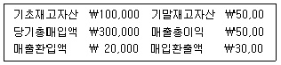
- ₩320,000
- ₩340,000
- ₩370,000
- ₩390,000
- ₩400,000
(정답률: 18%)
47. (주)진천(회계기간 1.1～12.31)은 1월 1일에 액면금액 ₩10,000의 사채(만기 3년, 표시이자율 연 8%, 이자지급일 매년 12월 31일) 1,000매를 발행 즉시 판매하였다. 발행일 현재 유효이자율은 연 10%이다. 이 사채의 단위당 발행가격은? (단, 다음의 현재가치표를 이용하고 소수점 이하는 버림)
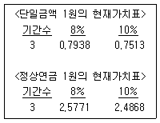
- ₩9,502
- ₩9,612
- ₩9,927
- ₩10,000
- ₩10,037
(정답률: 23%)
48. (주)자격(회계기간 1.1～12.31)은 2007년 7월 1일에 액면금액 ￦100,000의 사채(표시이자율 연 12%, 2년 만기)를 ￦103,466에 발행하였다. 이자지급일은 매년 6월 30일이며, 유효이자율은 연 10%이다. 유효이자율법으로 사채발행차금을 상각(환입)하고 있는 (주)자격이 12월 31일로 종료하는 2007년도 손익계산서에 보고할 사채이자비용은? (단, 소수점 이하는 버림)
- ￦4,400
- ￦5,000
- ￦5,173
- ￦6,207
- ￦10,346
(정답률: 24%)
49. (주)한강(회계기간 1.1～12.31)이 보고한 2007년도의 영업활동으로 인한 현금흐름은 ￦2,000이다. 다음의 관련 자료를 이용하여 2007년도 당기순이익을 계산하면 얼마인가?
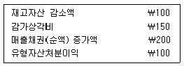
- ￦2,⑤0
- ￦2,100
- ￦2,150
- ￦2,200
- ￦2,250
(정답률: 45%)
50. (주)독도(회계기간 1.1～12.31)는 2007년 1월 5일에 자기주식 100주를 주당 ￦6,000에 취득하였다. 2007년 3월 5일에는 위의 자기주식 중에서 30주를 주당 ￦6,500에 재발행하였다. (주)독도가 재발행시 기업회계기준에 따른 회계처리로 옳은 것은? (단, 주당 액면금액은 ￦5,000임)
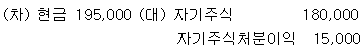
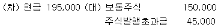
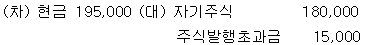
- (차) 현금 195,000 (대) 자기주식 195,000
- (차) 현금 195,000 (대) 보통주식 195,000
(정답률: 24%)
51. 건설형 공사계약에서 공사결과를 신뢰성 있게 추정할 수 있는 경우 진행기준으로 수익을 인식한다. 다음 중 진행기준을 적용할 경우 진행률 계산에 영향을 미치는 항목은?
- 수주비
- 토지의 취득원가
- 하자보수비
- 이주대여비 관련 순이자비용
- 자본화대상 금융비용
(정답률: 32%)
52. 다음은 (주)삼영(회계기간 1.1～12.31)의 퇴직급여충당부채에 관한 자료이다. 제2회계연도에 (주)삼영이 손익계산서에 보고한 퇴직급여가 ₩14,600,000일 때 기중 퇴직금 지급액은?
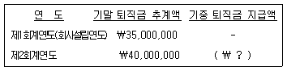
- ￦9,600,000
- ￦16,400,000
- ￦25,400,000
- ￦30,400,000
- ￦35,000,000
(정답률: 28%)
53. 다음 중 유가증권과 관련된 기업회계기준서의 내용으로 옳은 것은?
- 취득한 유가증권은 단기보유증권, 중기보유증권, 장기보유증권 중 하나로 분류한다.
- 단기매매증권은 상각후취득원가로 평가한다.
- 만기보유증권은 공정가액으로 평가하여 대차대조표에 표시한다.
- 유가증권은 어떠한 경우에도 분류변경할 수 없다.
- 단기매매증권에 대한 미실현보유손익은 당기손익항목으로 처리한다.
(정답률: 30%)
54. 다음 중 기업회계기준서에 따라 재무제표에 무형자산으로 보고되는 것은?
- 연구단계에서 발생한 지출
- 개발단계에서 발생한 지출 중 경상개발비
- 내부적으로 창출된 영업권
- 내부적으로 창출된 브랜드
- 유상으로 취득한 특허권
(정답률: 34%)
55. (주)한라는 건물과 토지를 일괄 취득하고 ￦110,000을 지급하였다. 취득 당시 건물의 공정가액은 ￦20,000이고, 토지의 공정가액은 ￦80,000이다. 건물과 토지의 취득원가는 각각 얼마인가? (순서대로 건물, 토지)
- ₩0, ₩110,000
- ₩22,000, ₩88,000
- ₩55,000, ₩55,000
- ₩88,000, ₩22,000
- ₩110,000, ₩0
(정답률: 24%)
56. (주)삼원건설(회계기간 1.1～12.31)은 20⑤년 1월 1일 ₩400,000에 취득한 건설장비(내용연수 4년, 잔존가액 ₩40,000)를 2007년 6월 30일에 ₩150,000에 처분하였다. (주)삼원건설은 정액법에 의해 건설장비를 감가상각하였다면, 동 건설장비의 처분과 관련된 처분손익은?
- 처분이익 ₩20,000
- 처분이익 ₩110,000
- 처분손실 ₩25,000
- 처분손실 ₩70,000
- 처분손실 ₩250,000
(정답률: 28%)
57. (주)태백은 임대목적으로 보유하고 있는 양평아파트에 엘리베이터를 새로 설치하고, 설치업자에게 5억원을 지급하였다. 이러한 엘리베이터의 설치로 양평아파트의 임대율과 임대료가 중요하게 증가한다면, 설치업자에게 지급된 현금과 관련된 설명으로 옳은 것은?
- 자본적 지출이므로 양평아파트의 장부가액에 포함시킨다.
- 자본적 지출이므로 수선ㆍ유지비용으로 계상한다.
- 수익적 지출이므로 양평아파트의 장부가액에서 차감한다.
- 수익적 지출이므로 수선ㆍ유지비용으로 계상한다.
- 수익적 지출이므로 임대료에서 설치비용을 차감한다.
(정답률: 35%)
58. 다음은 (주)서울의 2007년 1월 동안 상품 갑에 대한 기록이다. 이동평균법을 적용한 경우 2007년 1월 31일 현재 상품 갑의 단위당 기말재고액은?
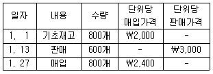
- ₩2,000
- ₩2,080
- ₩2,200
- ₩2,320
- ₩2,400
(정답률: 19%)
59. 다음 중 재고자산과 관련된 기업회계기준서의 내용으로 옳은 것은?
- 재고자산은 취득원가와 시가 중 높은 금액을 대차대조표가액으로 한다.
- 재고자산을 저가법으로 평가하는 경우 상품의 시가는 현행대체원가이다.
- 재고자산 평가를 위한 저가법은 총액기준으로 적용한다.
- 정상적으로 발생한 재고자산의 감모손실은 영업외비용으로 분류한다.
- 재고자산은 이를 판매하여 수익을 인식한 기간에 매출원가로 인식한다.
(정답률: 11%)
60. (주)한라(회계기간 1.1～12.31)는 2007년 1월 3일 시장성 있는 (주)태백의 주식 100주를 단위당 ￦310에 구입하고, 매도가능증권으로 회계처리 하였다. (주)태백 주식의 2007년 12월 31일 현재 시장가격은 단위당 ￦370이다. (주)한라가 2008년 1월 5일에 보유하고 있던 (주)태백 주식의 전량을 ￦35,000에 처분할 경우 회계처리로 옳은 것은?(단, (주)한라는 2007년 12월 31일에 보유하고 있던 (주)태백의 주식에 대해 적절한 회계처리를 하였음) (순서대로 차변, 대변)
- 현금 35,000, 매도가능증권 35,000
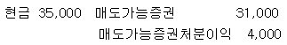
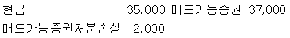
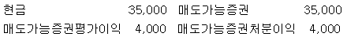

(정답률: 0%)
61. 다음 중 유동비율이 낮아지는 경우는? (단, 각 상황은 독립적이며 다른 조건은 동일하다고 가정함)
- 토지와 건물을 교환하였다.
- 영업용 차량을 현금을 받고 매각하였다.
- 현금을 주고 기계장치를 구입하였다.
- 일부 상품을 시송품으로 발송하였다.
- 자본잉여금으로 무상증자를 실시하였다.
(정답률: 20%)
62. 다음 중 재무회계개념체계에서 규정한 재무제표의 기본가정으로만 묶인 것은?
- 기업실체, 계속기업, 기간별 보고
- 기업실체, 발생주의, 신뢰성
- 기업실체, 계속기업, 비교가능성
- 계속기업, 발생주의, 목적적합성
- 목적적합성, 발생주의, 신뢰성
(정답률: 24%)
63. (주)경기(회계기간 1.1～12.31)는 2007년말 매출채권 ￦370,000에 대하여 경과기간별로 분류한 후 다음과 같이 회수가능성을 추정하였다. 기말 현재 수정전 대손충당금잔액은 ￦2,700이다. 연령분석법을 적용할 경우 기말수정분개로 옳은 것은?
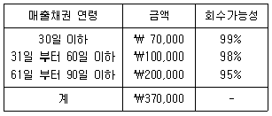
- (차) 대손상각비 700, (대) 대손충당금 700
- (차) 대손상각비 2,000, (대) 대손충당금 2,000
- (차) 대손상각비 10,000, (대) 대손충당금 10,000
- (차) 대손상각비 12,700, (대) 대손충당금 12,700
- (차) 대손상각비 25,400, (대) 대손충당금 25,400
(정답률: 32%)
64. (주)우리는 고객으로부터 받은 액면금액 ₩1,000,000의 이자부어음(6개월 만기, 표시이자율 연 10%)을 만기일 3개월 전에 할인율 연 12%로 대한은행에서 할인받았다. (주)우리의 현금수령액은?
- ₩880,000
- ₩900,000
- ₩968,000
- ₩1,018,500
- ₩1,⑤0,000
(정답률: 18%)
65. (주)동양(회계기간 1.1～12.31)이 취득한 2007년도의 단기매매증권의 단위당 취득원가와 대차대조표일 종가는 다음과 같다. 기말 현재 대차대조표에 보고될 단기매매증권은 얼마인가?
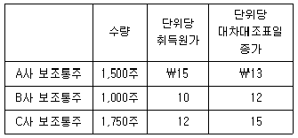
- ₩3,000
- ₩7,250
- ₩54,750
- ₩57,750
- ₩60,950
(정답률: 22%)
66. 다음은 (주)강원(회계기간 1.1～12.31)의 당좌예금잔액과 은행측 잔액의 차이 원인이다. (주)강원의 2007년 12월 31일 현재 조정 전 당좌예금잔액이 ￦2,010,000이라면, 은행측의 조정 전 잔액은?
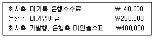
- ￦1,320,000
- ￦1,900,000
- ￦1,940,000
- ￦2,010,000
- ￦2,120,000
(정답률: 27%)
67. 다음 등식 중 옳은 것은? (단, 자본조정과 기타포괄손익누계액은 고려하지 않음)
- 자본 = 부채-자산
- 자산+기초이익잉여금+비용+배당 = 부채+자본금+자본잉여금+수익
- 자산+비용+배당 = 부채+자본금+자본잉여금+기초이익잉여금+수익
- 자산+수익+배당 = 부채+자본금+자본잉여금+기초이익잉여금+비용
- 자산+비용 = 부채+자본금+자본잉여금+기초이익잉여금+수익+배당
(정답률: 18%)
68. 다음 중 기업회계기준서에서 규정하고 있는 재무제표에 포함되지 않는 것은?
- 현금흐름표
- 이익잉여금처분계산서
- 자본변동표
- 부속명세서
- 주석
(정답률: 18%)
69. (주)대한은 매월 15일에 상품을 일괄 구매하여 판매한다. 상품 구입대금은 구입시점에 30%를 지급하며, 구입한 달의 말에 20%, 그 다음 달의 말에 40%, 또 그 다음 달의 말에 10%를 지급한다. (주)대한이 2007년 1월과 2월에 각각 ￦600,000과 ￦800,000의 상품을 구입하였다면, 3월초 상품 관련 매입채무 잔액은 얼마인가?
- ￦126,000
- ￦168,000
- ￦224,000
- ￦336,000
- ￦460,000
(정답률: 17%)
70. 다음은 (주)대전(회계기간 1.1～12.31)의 자료이다. 2007 회계기간의 총수익은 얼마인가? (단, 2007년 중 주주와의 거래는 없었으며, 자본조정과 기타포괄손익누계액은 고려하지 않음)
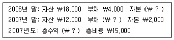
- ￦2,000
- ￦3,000
- ￦12,000
- ￦14,000
- ￦15,000
(정답률: 17%)
71. (주)종로(회계기간 1.1～12.31)는 임차료를 지급할 때 선급임차료로 기장한다. (주)종로의 2007년 기말 선급임차료가 기초보다 ￦9,000 감소하였다. (주)종로의 2007년 손익계산서에 보고된 임차료가 ￦416,000이라면, 2007년 중 임차료로 지급한 현금은 얼마인가?
- ￦398,000
- ￦407,000
- ￦416,000
- ￦425,000
- ￦434,000
(정답률: 7%)
72. 감사범위 제한의 영향이 매우 중요하고 전반적이어서 감사인이 충분하고 적합한 감사증거를 획득할 수 없는 경우에 재무제표에 대한 외부감사인의 감사의견으로 옳은 것은?
- 적정의견
- 부적정의견
- 의견거절
- 중립의견
- 한정의견
(정답률: 40%)
73. (주)개성은 정상개별원가계산을 채택하고 있다. 2007년 1월 재공품 기초금액은 ￦20,000이다. 1월 중 직접재료원가 ￦80,000, 직접노무원가 ￦60,000, 제조간접원가 ￦57,000이 실제 발생하였다. 제조간접원가는 직접노무원가의 90%를 배부하고 있다. 동 기간 동안 완성품 계정으로 대체된 금액(당기제품제조원가)은 ￦204,000이다. 1월 말 현재 유일한 재공품인 ♯101에 제조간접원가가 ￦2,700 배부되었다면 ♯101의 직접재료원가는 얼마인가?
- ￦3,000
- ￦4,000
- ￦4,100
- ￦4,300
- ￦7,300
(정답률: 23%)
74. (주)태백의 제품생산 및 판매 관련 정보는 다음과 같다. (주)태백이 목표이익을 달성하기 위한 판매량은 몇 단위인가? (단, 법인세는 없는 것으로 가정함)
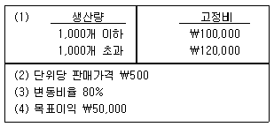
- 1,300개
- 1,500개
- 1,700개
- 2,000개
- 2,500개
(정답률: 27%)
75. (주)진사는 표준원가계산제도를 사용하고 있다. 2007년 8월중에 직접재료 1,500kg을 kg당 ￦50에 구입하였다. 8월의 예정생산량은 300단위이며, 실제생산량은 350단위이다. 직접재료의 가격표준은 kg당 ￦45이다. 수량차이가 ￦11,250(유리)일 때 직접재료의 수량표준은? (단, 2007년 8월 직접재료의 월초재고와 월말재고는 없음)
- 3.6 kg
- 4.0 kg
- 4.9 kg
- 5.0 kg
- 5.4 kg
(정답률: 17%)
76. (주)계룡은 종합원가계산을 적용하고 있다. 다음은 (주)계룡의 2007년 8월 생산관련 자료이다. 기초재공품과 기말재공품의 가공원가가 각각 70%, 40% 완성되었다. 가공원가는 공정전체에 걸쳐 균등하게 발생한다. 검사는 완성도 80%에서 이루어진다. 선입선출법을 사용할 경우 2007년 8월 가공원가의 완성품환산량은 몇 단위인가?
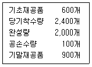
- 2,020개
- 2,260개
- 2,360개
- 2,440개
- 2,460개
(정답률: 18%)
77. (주)고성의 11월 예산자료는 다음과 같다. 11월 중 기대 판매수량은 1,500개이며, 실제 판매수량은 1,800개이다. 동 기간 중 예산과 실제 단위당 공헌이익은 동일하다. 또한 고정제조원가와 고정판매비의 예산과 실제 발생액도 동일하다. 11월의 실제 영업이익은 기대 영업이익보다 얼마나 증가하는가?
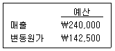
- ₩4,500
- ₩12,500
- ₩19,500
- ₩28,500
- ₩29,500
(정답률: 17%)
78. (주)한강은 부품 A를 자가제조하고 있다. 연간 5,000단위의 부품 A를 자가제조시 단위당 제조원가는 다음과 같다. (주)금강은 (주)한강에게 부품 A를 단위당 ￦550에 연간 5,000단위를 납품하겠다고 제의하였다. (주)한강이 이를 수락할 경우 유휴시설을 임대하여 연간 ￦600,000의 임대수익을 얻을 수 있으며, 부품 A에 배부된 고정제조간접원가는 단위당 ￦100만큼 회피가능하다. 다음 중 옳은 것은?
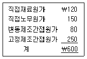
- 외부구입시 연간 ￦100,000만큼 이익 증가
- 외부구입시 연간 ￦125,000만큼 이익 증가
- 자가제조시 연간 ￦75,000만큼 이익 증가
- 자가제조시 연간 ￦100,000만큼 이익 증가
- 자가제조시 연간 ￦125,000만큼 이익 증가
(정답률: 12%)
79. 다음은 (주)소백의 2007년 전반기 생산활동 자료이다. 이 자료를 이용하여 고저점법을 적용할 때 단위당 변동원가가 ￦40이다. 3월의 발생원가는 얼마인가?
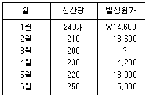
- ￦12,900
- ￦13,000
- ￦13,100
- ￦13,200
- ￦13,300
(정답률: 13%)
80. 다음은 (주)백두의 재공품 및 제품 관련 정보이다. (주)백두의 기말 제품재고액은 얼마인가?
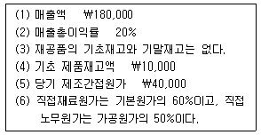
- ₩4,000
- ₩6,000
- ₩10,000
- ₩12,000
- ₩14,000
(정답률: 7%)
3과목: 공동주택시설개론
81. 건축물의 구성부분 중 하중을 지지하지 않는 것은?
- 보
- 기둥
- 바닥판
- 계단
- 칸막이벽
(정답률: 34%)
82. 공통가설공사의 범위에 속하지 않는 것은?
- 가설도로
- 시멘트창고
- 낙하물방지망
- 현장사무소
- 가설전기
(정답률: 36%)
83. 아래 그림에서 기초판과 지정의 경계면으로 옳은 것은?
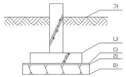
- 가(지반면)
- 나(기초 바닥판 상부)
- 다(밑창콘크리트 상부)
- 라(잡석다짐 상부)
- 마(잡석다짐 하부)
(정답률: 36%)
84. 밀실한 지반의 허용 지내력도를 큰 순서대로 옳게 나열한 것은?
- 자갈 > 자갈 모래 혼합물 > 연암반 > 모래 섞인 점토 > 점토
- 자갈 > 연암반 > 자갈 모래 혼합물 > 점토 > 모래 섞인 점토
- 연암반 > 자갈 > 자갈 모래 혼합물 > 모래 섞인 점토 > 점토
- 연암반 > 자갈 모래 혼합물 > 자갈 > 점토 > 모래 섞인 점토
- 자갈 모래 혼합물 > 자갈 > 연암반 > 모래 섞인 점토 > 점토
(정답률: 53%)
85. 조적공사에서 조절줄눈을 설치하는 부위로서 옳지 않은 것은?
- 내력벽과 비내력벽이 만나는 부위
- 벽의 두께가 변하는 부위
- 벽의 높이가 변하는 부위
- 창이나 출입구 상하의 벽돌 벽 중앙 부위
- 콘크리트 벽체와 벽돌 벽이 직각으로 만나는 부위
(정답률: 50%)
86. 벽돌쌓기 공사에 대한 설명으로 옳지 않은 것은?
- 내화벽돌은 물 축임을 하지 않고 쌓는다.
- 일반적으로 세로줄눈은 통줄눈으로 하지 않는다.
- 1일 쌓기 높이는 1.2m를 표준으로 하고, 최대 1.5m 이내로 한다.
- 보통벽돌의 줄눈 너비는 10mm를 표준으로 한다.
- 줄눈에 사용하는 모르타르의 강도는 벽돌 강도보다 작아야 한다.
(정답률: 42%)
87. 철근콘크리트의 특성에 대한 설명으로 옳지 않은 것은?
- 철근과 콘크리트는 열에 의한 선팽창 및 수축계수가 유사하다.
- 콘크리트의 알칼리성분은 철근의 녹을 방지하는 역할을 한다.
- 철근과 콘크리트의 상호 부착력이 우수하여 구조체로서 일체성이 높다.
- 압축에 강한 콘크리트와 인장에 강한 철근을 결합하여 각각의 특성이 발휘되도록 한 구조체이다.
- 철근콘크리트는 철근이 열에 약하기 때문에 내화에 취약하다.
(정답률: 31%)
88. 옹벽에 대한 설명으로 옳지 않은 것은?
- 역T형 옹벽은 전면벽, 앞굽판 및 뒷굽판으로 구성된다.
- 중력식 옹벽은 옹벽의 자중으로 토압에 저항하는 형식이다.
- 옹벽은 전도, 활동 및 침하에 안전하여야 한다.
- 캔틸레버식 옹벽은 중력식 옹벽에 부벽이 추가된 형식이다.
- 부벽식 옹벽은 캔틸레버식 옹벽보다 토압을 많이 받는 경우에 사용한다.
(정답률: 50%)
89. 철근콘크리트의 구조형식에 대한 설명으로 옳지 않은 것은?
- 라멘 구조는 기둥과 보를 일체로 연결하는 구조형식이다.
- 벽식 구조는 기둥이 없이 벽과 슬래브를 연결하는 구조형식이다.
- 플랫 슬래브 구조는 내부에 보가 없이 슬래브를 직접 기둥에 연결하는 구조형식이다.
- 프리캐스트 구조는 벽, 기둥, 보 및 슬래브 등 주요 부재를 미리 제작하여 현장에서 연결하는 구조형식이다.
- 프리스트레스트 구조는 보가 없이 슬래브를 직접 벽에 연결하는 구조형식이다.
(정답률: 29%)
90. 철골구조에 대한 설명으로 옳지 않은 것은?
- 기둥과 보는 주로 강관이나 형강을 사용한다.
- 기둥과 보를 연결하는 접합은 리벳이음을 주로 사용한다.
- 강재를 용접하는 경우에는 용접용 강재를 사용하는 것이 유리하다.
- 고장력 볼트를 이용한 접합은 접합재 상호간 생긴 마찰력으로 힘을 전달한다.
- 용접이음은 모재와 접합재가 일체되어 튼튼하며 구멍이 뚫려 생기는 단면결손이 없다.
(정답률: 32%)
91. 철근콘크리트구조와 비교하여 철골구조에 대한 설명으로 옳은 것은?
- 강재는 단면에 비해 부재가 세장하므로 좌굴을 일으키기가 쉽다.
- 철거시 폐기물 발생량이 많고 재료의 재사용이 불가능하다.
- 고열에 강도가 저하되고 변형하기 쉽지만 진동이 잘 전달되지 않는다.
- 강재는 재질이 균등하지만 연성이 작아서 큰 변위가 발생하는 부재에는 적당하지 않다.
- 철골은 콘크리트보다 강도가 커서 부재 단면을 작게 할 수 있으나 비중이 커서 건물 전체의 중량이 무겁다.
(정답률: 35%)
92. 지붕재의 재료적 특성과 지붕 기울기(물매)에 대한 설명으로 옳지 않은 것은?
- 평기와의 기울기는 4:10 이상으로 한다.
- 지붕 면적이 클수록 기울기를 가파르게 한다.
- 대형 슬레이트는 소형 슬레이트보다 물매가 크다.
- 지붕의 기울기는 지붕의 형태, 재료의 성질 및 강우량 등에 의해 결정된다.
- 지붕재료는 내수성, 수밀성 및 경량성 등이 요구된다.
(정답률: 37%)
93. 방수공법에 대한 설명으로 옳지 않은 것은?
- 외벽의 바깥방수는 안방수에 비해 방수효과가 우수하다.
- 아스팔트방수, 도막방수 및 시트방수는 멤브레인방수에 속한다.
- 기초 부분에서 바깥방수는 바닥방수를 한 후 밑창콘크리트를 타설한다.
- 안방수는 보수가 쉽고 공사비가 저렴하지만, 지하수압이 크면 불리하다.
- 안방수에서는 바닥에 누름콘크리트를 설치하고, 벽체에도 방수층 누름벽을 설치한다.
(정답률: 32%)
94. 도막방수에 대한 설명으로 옳지 않은 것은?
- 도막방수는 바탕처리를 한 후 프라이머를 도포한다.
- 도막방수시 핀홀 발생을 적게 하려면 평면부, 치켜올림부의 순서로 도포한다.
- 도막방수는 고무아스팔트방수, 우레탄방수 등이 사용된다.
- 방수재의 1회 혼합량은 시공시기, 면적, 능률 및 재료의 사용가능시간 등을 고려하여 결정한다.
- 보강포는 바탕균열경감, 도막두께확보 및 치켜올림부 방수재의 흘러내림방지를 위하여 사용된다.
(정답률: 42%)
95. 도배공사에 대한 설명으로 옳지 않은 것은?
- 시공 전에 바탕 면을 건조시킨다.
- 이음 부위에는 들뜸 방지 조치를 한다.
- 온통 붙임은 도배지 전부에 풀칠하는 방법이다.
- 봉투 붙임은 도배지 한쪽 면에 풀칠하는 방법이다.
- 도배지에는 초배지, 재배지 및 정배지 등이 있다.
(정답률: 34%)
96. 알루미늄 창호의 특징으로 옳지 않은 것은?
- 기밀성이 우수하다.
- 철제 창호보다 가볍다.
- 내화성이 좋지 않다.
- 산 및 알칼리에 대한 내식성이 우수하다.
- 제작이 용이하고 외관이 미려하다.
(정답률: 28%)
97. 미장공사에 대한 설명으로 옳지 않은 것은?
- 바름 두께를 얇게 하여 여러 번 바르는 것이 좋다.
- 실내 모르타르 바르기의 순서는 벽, 천장, 바닥의 순으로 한다.
- 상당히 긴 벽면의 미장 면에는 신축줄눈을 설치하는 것이 좋다.
- 시멘트 모르타르는 시멘트, 물, 모래 및 기타 혼화재료 등을 혼합한 것이다.
- 개구부 주변의 바탕 면에는 메탈라스를 설치하는 것이 좋다.
(정답률: 42%)
98. 도장공사에 대한 설명으로 옳지 않은 것은?
- 도장면은 가능한 직사 일광을 피한다.
- 도막의 건조는 매회 충분히 해야 한다.
- 바람이 심할 때는 작업을 피하는 것이 좋다.
- 매회 두껍게 도장하여 도장 횟수를 줄이는 것이 좋다.
- 도장 횟수를 구별하기 위해 매회 칠의 색깔을 조금씩 다르게 한다.
(정답률: 48%)
99. 원가계산에 의한 예정가격작성준칙에 따라 공사비를 산정할 때 순공사원가(직접공사비)에 포함되지 않는 것은?
- 경비
- 노무비
- 일반관리비
- 직접재료비
- 간접재료비
(정답률: 43%)
100. 건축적산과 견적에 대한 설명으로 옳지 않은 것은?
- 견적의 정확도는 명세견적보다 개산견적이 높다.
- 시멘트벽돌의 소요량은 정미량에 5% 할증을 가산하여 구한다.
- 실행예산은 건설회사에서 공사를 수행하기 위한 소요공사비이다.
- 표준품셈이란 단위 작업당 소요되는 재료수량, 노무량 및 장비사용시간 등을 수치로 표시한 견적기준이다.
- 견적은 산출된 수량에 단가를 곱하여 금액을 계산한 후 부대비용 등을 합하여 총공사비를 산출하는 것이다.
(정답률: 44%)
101. 대변기에 대한 설명으로 옳지 않은 것은?
- 블로우 아웃식은 소음이 작아 공동주택 등에 적합하다.
- 절수형 변기를 사용하면 1회에 2∼3ℓ의 절수가 가능하다.
- 세락식은 오물을 트랩 내의 유수 중에 직접 낙하시켜 세정하는 방식이다.
- 사이펀 볼텍스식은 사이펀 작용과 물의 회전운동에 의한 와류를 이용한 것이다.
- 세정밸브식의 급수관경은 25mm 이상이어야 한다.
(정답률: 30%)
102. 급수설비의 수질오염방지 대책으로 옳지 않은 것은?
- 수조의 급수 유입구와 유출구의 거리는 가능한 한 짧게 하여 정체에 의한 오염이 발생하지 않도록 한다.
- 크로스 커넥션(cross connection)이 발생하지 않도록 급수배관을 한다.
- 용존산소에 의한 부식방지를 위하여 배관류는 부식에 강한 재료를 사용토록 한다.
- 음용수용 수조 내면에 칠하는 도료는 수질에 영향을 주지 않는 것으로 하고, 수조 및 부속품은 내식성 자재로 한다.
- 단수 발생시 일시적인 부압으로 인한 배수의 역류가 발생하지 않도록 토수구에 공간을 두거나 베큠브레이커(vacuum breaker)를 설치토록 한다.
(정답률: 28%)
103. 건물 내의 급수방식에 대한 설명으로 옳지 않은 것은?
- 고가수조방식은 단수시에도 일정량의 급수가 가능하다.
- 수도직결방식은 기계실 및 옥상탱크가 불필요하고, 단수시에 급수가 불가능하다.
- 수도직결방식은 설비비가 타 방식에 비해 저렴하고, 수도 본관의 압력에 따라 급수압력이 변한다.
- 부스터 펌프에 의한 가압급수방식은 토출압력을 일정하게 유지하기 위한 제어장치가 필요하다.
- 고가수조방식은 타 방식에 비해 상대적으로 수질오염의 가능성이 낮고, 급수압력의 변동이 작다.
(정답률: 38%)
104. 급탕설비에 대한 설명으로 옳지 않은 것은?
- 개별식 급탕방식은 소규모 건물에 유리하고, 중앙식 급탕방식에서 간접가열방식은 대규모 건물에 유리하다.
- 개별식 급탕방식은 긴 배관이 필요 없으므로 총열손실이 작다.
- 중앙식 급탕방식은 설비비가 많이 소요되나, 기구의 동시 이용률을 고려하여 가열장치의 총용량을 작게 할 수 있다.
- 급탕배관 방식은 단관식과 순환식으로 구분되며, 단관식은 설비비가 적게 소요되므로 중ㆍ소규모 급탕에 사용된다.
- 온수 보일러나 저탕조에서 15m 이상 떨어져서 급탕전을 설치하는 경우에는 단관식을 채용하는 것이 좋다.
(정답률: 24%)
1⑤. 급탕배관 계통에서 급탕 공급온도가 60℃, 환수온도가 50℃이고, 순환수량이 50ℓ/min일 때, 급탕가열기 용량(kW)은 얼마가 필요한가?
- 약 25.8kW
- 약 30.0kW
- 약 34.9kW
- 약 43.0kW
- 약 58.1kW
(정답률: 6%)
106. <보기>에서 공조방식에 대한 설명으로 옳은 항목을 모두 고른 것은?
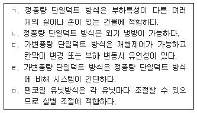
- ㄱ, ㄹ
- ㄷ, ㄹ
- ㄴ, ㄷ, ㅁ
- ㄱ, ㄷ, ㅁ
- ㄱ, ㄴ, ㄹ, ㅁ
(정답률: 30%)
107. 흡수식 냉동기에 대한 설명으로 옳은 것은?
- 냉매로써 R-12가 사용된다.
- 압축식 냉동기에 비해 소음ㆍ진동이 작다.
- 냉동 사이클은 흡수 → 증발 → 재생 → 응축의 순서이다.
- 실제 냉동이 이루어지는 부분은 응축기이다.
- 압축식 냉동기에 비해 많은 전력을 소비한다.
(정답률: 29%)
108. 통기관의 배관에 대한 설명으로 옳지 않은 것은?
- 통기수직관은 빗물 수직관과 연결해서는 안 된다.
- 섹스티아 방식에서는 공기혼합이음과 공기분리이음을 사용한다.
- 배수수직관내의 배수 흐름을 원활히 하기 위하여 결합통기관을 설치한다.
- 오수정화조의 배기관은 단독으로 대기 중에 개방해야 하며 일반 통기관과 연결해서는 안 된다.
- 당해 층의 가장 높은 위치에 있는 위생기구의 오버플로우면으로부터 최소 150mm 이상 높은 위치에서 통기배관을 한다.
(정답률: 18%)
109. 배수의 수평지관 또는 수직배수관에서 일시에 다량의 배수가 흘러내려가는 경우, 이 배수의 압력에 의해 하류 또는 하층 기구에 설치된 트랩의 봉수가 파괴되는 것을 무엇이라 하는가?
- 분출 작용
- 자기 사이펀 작용
- 운동량에 의한 관성
- 증발 현상
- 모세관 현상
(정답률: 36%)
110. 배관설비에 대한 설명으로 옳지 않은 것은?
- 급탕용 배관재로 동관과 스테인리스 강관이 주로 사용된다.
- 배수수직관의 상부는 연장하여 신정통기관으로 사용하며, 대기 중에 개방한다.
- 배관 지지철물은 수격작용에 의한 관의 진동이나 충격에 견딜 수 있도록 견고하게 고정한다.
- 플랜지이음은 밸브, 펌프 및 각종 기기와 배관을 연결하거나, 교환 해체가 자주 발생하는 곳에 사용한다.
- 배관의 보온재는 보온 및 방로효과를 높이기 위하여 사용온도에 견디고 열관류율이 되도록 큰 재료를 사용한다.
(정답률: 47%)
111. 장시간 폭기방식에 의한 오수정화조의 오수정화 순서를 올바르게 나타낸 것은?
- 스크린 → 폭기조 → 침전조 → 소독조
- 폭기조 → 스크린 → 침전조 → 소독조
- 폭기조 → 스크린 → 소독조 → 침전조
- 스크린 → 소독조 → 폭기조 → 침전조
- 침전조 → 폭기조 → 스크린 → 소독조
(정답률: 36%)
112. 소화설비에 대한 설명으로 옳지 않은 것은?
- 기동용 수압 개폐장치(압력챔버)의 용적은 100ℓ 이상의 것으로 한다.
- 옥내소화전 펌프의 성능은 체절운전시 정격토출압력의 150%를 초과하지 않아야 한다.
- 호스릴 옥내소화전 설비의 방수량은 60ℓ/min 이상이다.
- 옥외소화전에서 소방대상물의 각 부분으로부터 하나의 호스접결구까지의 수평거리는 40m 이하로 한다.
- 인접건물의 연소를 방지하는 드렌처 설비의 헤드 설치간격은 2.5m 이내로 한다.
(정답률: 34%)
113. 스프링클러 설비에 대한 설명으로 옳지 않은 것은?
- 주차장에 설치되는 스프링클러는 습식 이외의 방식으로 하여야 한다.
- 스프링클러 헤드 가용합금편의 표준용융온도는 67～75℃ 정도이다.
- 스프링클러 헤드의 방수압력은 0.1～1.2MPa이고, 방수량은 80ℓ/min 이상이어야 한다.
- 준비작동식은 1차 및 2차측 배관에서 헤드까지 가압수가 충만되어 있다.
- 아파트 천장, 반자 등의 각 부분으로부터 하나의 스프링클러 헤드까지의 거리는 3.2m 이하여야 한다.
(정답률: 30%)
114. 가스설비에 대한 설명으로 옳지 않은 것은?
- 가스배관은 저압전선과 15cm 이상 이격해야 한다.
- 가스미터기는 전기미터기와 60cm 이상 이격해야 한다.
- 가스배관은 전기콘센트로부터 30cm 이상 이격해야 한다.
- 세대에 공급되는 도시가스는 500～550mmAq의 압력으로 공급된다.
- LNG의 경우 가스경보장치는 천장으로부터 30cm 이내 높이에 설치해야 한다.
(정답률: 17%)
115. 난방설비에 대한 설명으로 옳지 않은 것은?
- 온수난방은 증기난방에 비해 제어가 용이하다.
- 온수난방은 증기난방에 비해 배관 내면의 부식이 적다.
- 증기난방은 온수난방에 비해 예열시간이 짧고 열매의 순환이 빠르다.
- 증기난방은 온수난방보다 방열면적을 작게 할 수 있으며 관경이 작아도 된다.
- 온수난방은 현열을 이용한 난방이므로 증기난방에 비해 쾌감도가 낮고 열용량이 작아 온수 순환시간이 짧다.
(정답률: 38%)
116. 다음의 도면기호 중 누전차단기를 나타낸 것은?
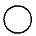
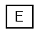
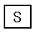
(정답률: 32%)
117. 전기설비의 배선공사에 대한 설명으로 옳지 않은 것은?
- 가요전선관 공사는 주로 철근콘크리트 건물의 매립 배선 등에 사용된다.
- 금속몰드 공사는 주로 철근콘크리트 건물에서 기설치된 금속관 배선을 증설할 경우에 사용된다.
- 합성수지 몰드 공사는 접속점이 없는 절연 전선을 사용하여 전선이 노출되지 않도록 해야 하며, 내식성이 좋다.
- 라이팅덕트 공사는 덕트 본체에 실링이나 콘센트를 구성하여 사용하며, 벽면 조명등과 같은 광원을 이동시킬 경우에 사용된다.
- 경질비닐관 공사는 관 자체가 우수한 절연성을 가지고 있으며, 중량이 가볍고 시공이 용이하나 열에 약하고 기계적 강도가 낮은 단점이 있다.
(정답률: 25%)
118. 공동주택 단지 내의 지역난방 기계실에 주로 설치되는 열교환기는?
- 쉘앤튜브(shell and tube)형 열교환기
- 판형 열교환기
- 스파이럴(spiral)형 열교환기
- 전열교환기
- 현열교환기
(정답률: 34%)
119. 다음 중 직류 엘리베이터의 특징으로 옳은 것은?
- 교류 엘리베이터에 비해 가격이 저렴하다.
- 교류 엘리베이터에 비해 기동토크가 작다.
- 전효율이 40∼60%이다.
- 착상오차가 1mm 이내이다.
- 부하에 따른 속도변동이 있다.
(정답률: 32%)
120. 홈네트워크 설비에 대한 설명으로 옳지 않은 것은?
- 홈게이트웨이는 외부망의 방식에 관계없이 주택내부의 네트워크와 연결시켜 외부에서도 제어가 가능하도록 한다.
- 홈네트워크 설비는 홈서버, 정보단말기, 유무선 통신네트워크 및 제어기 등으로 구성된다.
- 홈네트워크 설비에 사용되는 센서에는 화재센서, 가스센서, 방범센서 및 온도센서 등이 있다.
- 원격제어기기, 감지기와 같은 홈네트워크 기기는 호환이 가능하도록 구성하여야 한다.
- 에너지관리 기능으로 정보가전 서비스, 냉난방 제어, 세대내 조명제어 및 원격검침이 있다.
(정답률: 30%)